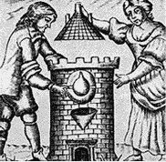
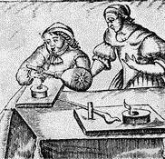

|
|
|
|  |
| Athanor |
| |
 |
| Alludel |
| |
|  |
|
Crogiolo |
|
 |
|
Il sole e la luna |
|
|
|
| 1-
Il laboratorio o officina |
|
|
| I
laboratori si celavano nei luoghi più reconditi
delle case, nei granai o nelle cantine, per garantire
la discrezione delle operazioni che vi venivano
effettuate. Nei laboratori, era possibile trovare
un grande forno, vasi, alambicchi, matracci, coppelle
e crogioli.
|
|
|
| L'athanor
Si tratta del forno che consente di separare la
materia dagli elementi. Di forma rotonda e composto
da mattoni piuttosto spessi per conservare il
calore, esso è il ricettacolo che accoglie varie
operazioni alchemiche. Alla base, si trova il
focolare, spirito della trasformazione, quindi
la camera, che riceve in successione acqua e aria,
che agiscono come solventi. |
|
|
| L'alludel
completa l'impianto. Esso è composto da vasi in
terra dipinta, incastrati gli uni dentro gli altri
alla sommità dei quali si trova un capitello,
la cui funzione è quella di raccogliere la materia
che risulta dall'operazione. Il pellicano serve
come recipiente per la circolazione dei liquidi. |
|
|
| La
bilancia
Poiché l'alchimia si basa anche sui concetti
di esattezza e di perfezione, la bilancia è uno
strumento essenziale, in grado di misurare in
modo preciso le quantità necessarie per trovare
l'armonia. |
|
|
| Il
crogiolo
La fusione dei metalli avviene in vasi, denominati
crogioli. Composti di argilla pura, vengono riscaldati
all'interno di forni di vario tipo, in base alla
temperatura necessaria per la trasformazione desiderata.
Il crogiolo viene anche denominato matraccio o
uovo filosofico. I testi ermetici utilizzano spesso
anche i nomi di sfera, prigione, fiala, sepolcro,
matrice. |
|
|
| La
realizzazione della Grande Opera è possibile esclusivamente
per mezzo del fuoco. Di conseguenza, il
focolare gioca un ruolo determinante. Gli alchimisti
utilizzano tre tipi di calore: il fuoco umido,
o bagnomaria, il fuoco soprannaturale o artificiale,
ottenuto mediante l'aggiunta di un acido, o il
fuoco naturale. |
|
| 2-
Il sole e la luna |
|
| Zosimo
di Panopolis, alchimista alessandrino, scriveva
nelle proprie "Instructions à Eusébie" (istruzioni
per Eusebio) che "Il grande Sole produce l'Opera,
poiché è per mezzo del sole che tutto si compie". |
|
| Assimilato
allo Zolfo rosso o determinando il punto centrale
dell'Opera, il sole viene rappresentato da Helios
o Osiride. Esso è stato ben presto confuso con
Apollo, ma, tale associazione non ha alcuna giustificazione
da un punto di vista ermetico. |
|
| A
dire il vero, il sole non è un ingrediente, ma
un principio attivo. Esso rappresenta Dio, l'aquila,
il leone, il cervo e, ovviamente, l'oro, alchemicamente
denominato "Sole dei metalli". Il sole
costituisce l'esito della Grande Opera, il compimento
del "magnum opus" simboleggiato dall'albero solare. |
|
| Anche
la luna è un principio importante, anche se passivo.
Essa simboleggia il Mercurio e costituisce l'esito
della Piccola Opera, simboleggiata dall'albero
lunare. |
|
 |
| Il
sole e la luna |
|
| 3-
I metalli |
|
| Ad
ogni pianeta è associato un metallo in base al
colore dominante. I sette metalli sono classificati
dai più impuri ai più puri. La trasmutazione deve
attraversare tutte queste fasi in successione
prima di raggiungere la perfezione. |
|
|
| Piombo
> Stagno
> Rame > Ferro > Mercurio > Argento
> Oro |
| |
(Pb) |
(St) |
(Cu) |
(Fe) |
(Hg) |
(Ag) |
(Au) |
|
|
|
|
| 4-
Gli elementi |
|
| Gli
alchimisti utilizzano i 4 elementi per
purificare la materia. Essi interagiscono in base
al loro carattere comune, ad esempio la terra
secca con il fuoco secco. |
|
| Da
un punto di vista simbolico, si tratta si separare
l'anima dal corpo e di raggiungere Dio. |
| |
 |
|